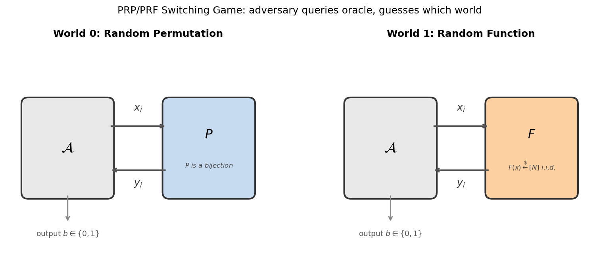
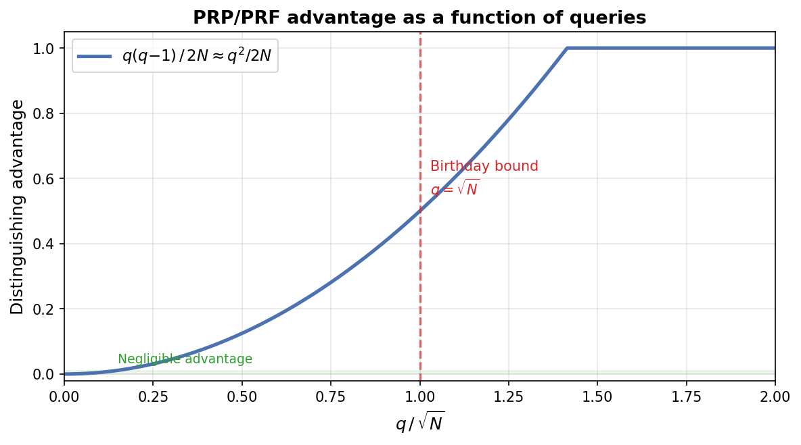
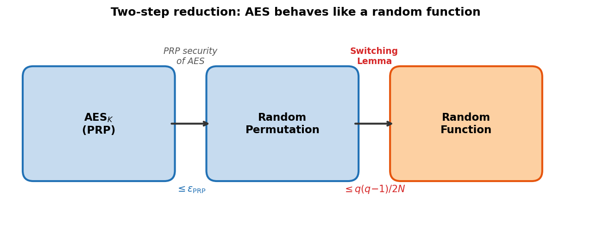

PRP/PRF Switching Lemma
The Problem
When Can We Treat a Permutation as a Random Function?
Block ciphers like AES are pseudorandom permutations (PRPs): keyed bijections on \(\{0,1\}^n\). Many cryptographic constructions (e.g., counter mode encryption) are analysed assuming access to a pseudorandom function (PRF): a keyed map whose outputs are independent and uniform. The switching lemma bridges this gap.
Definitions
Let \(N = 2^n\) (the domain size, e.g., \(N = 2^{128}\) for AES).
- Random function \(F\): for each input \(x \in [N]\), the output \(F(x)\) is drawn independently and uniformly from \([N]\).
- Random permutation \(P\): a uniformly random bijection on \([N]\), so all outputs are distinct.
An adversary \(\mathcal{A}\) makes \(q\) adaptive queries to an oracle \(\mathcal{O}\), then outputs a bit. The distinguishing advantage is:
\[\mathsf{Adv}(\mathcal{A}) = \bigl\lvert \Pr[\mathcal{A}^{P(\cdot)} = 1] - \Pr[\mathcal{A}^{F(\cdot)} = 1] \bigr\rvert\]
The distinguishing game

The adversary \(\mathcal{A}\) is placed in one of two worlds and must guess which:
- World 0: the oracle is a uniformly random permutation \(P\) on \([N]\) (all outputs distinct).
- World 1: the oracle is a uniformly random function \(F: [N] \to [N]\) (outputs i.i.d. uniform).
The only observable difference is that \(P\) never produces a collision (\(y_i = y_j\) for \(i \neq j\)), while \(F\) may. The switching lemma says this difference is negligible when \(q \ll \sqrt{N}\).
Statement (PRP/PRF Switching Lemma)
Lemma [1]: For any adversary \(\mathcal{A}\) making at most \(q\) queries,
\[\bigl\lvert \Pr[\mathcal{A}^{P(\cdot)} = 1] - \Pr[\mathcal{A}^{F(\cdot)} = 1] \bigr\rvert \leq \frac{q(q-1)}{2N}\]
where \(N\) is the domain size. Equivalently, \(\mathsf{Adv}(\mathcal{A}) \leq \binom{q}{2}/N\).
This bound is tight and information-theoretic: it holds against computationally unbounded adversaries, and depends only on the number of queries \(q\) and the domain size \(N\).
Why \(q(q-1)/2N\)? The birthday bound

The bound \(q(q-1)/2N\) is exactly the probability that \(q\) uniform samples from \([N]\) include at least one collision (the birthday problem). This is not a coincidence: collisions are the only way to distinguish a random function from a random permutation.
- For \(q \ll \sqrt{N}\): the advantage is negligible (e.g., \(q = 2^{40}\) queries against AES-128 gives advantage \(\approx 2^{-49}\)).
- At \(q \approx \sqrt{N}\): the advantage becomes constant (\(\approx 1/2\)).
- For \(q \gg \sqrt{N}\): the adversary wins with high probability.
Proof Sketch
The proof uses a coupling argument. We construct a random function \(F\) and a random permutation \(P\) on the same probability space so that they agree unless a "bad event" occurs.
Construction
Sample \(F\) as a truly random function. Define \(P\) by a lazy-sampling process:
- On query \(x_i\), first compute \(y_i = F(x_i)\).
- If \(y_i\) does not collide with any previous output of \(P\), set \(P(x_i) = y_i\).
- If \(y_i\) collides (i.e., \(y_i = P(x_j)\) for some \(j < i\)), resample \(P(x_i)\) uniformly from \([N] \setminus \{P(x_1), \ldots, P(x_{i-1})\}\).
In step (2), the adversary sees identical responses from \(F\) and \(P\). The worlds diverge only in step (3), which requires \(F\) to produce a collision among its first \(q\) outputs.
Bounding the bad event
At query \(i\), the probability that \(F(x_i)\) collides with one of the \(i-1\) previous (distinct) outputs is at most \((i-1)/N\). By a union bound over all \(q\) queries:
\[\Pr[\text{bad}] \leq \sum_{i=1}^{q} \frac{i-1}{N} = \frac{q(q-1)}{2N}\]
Since the adversary's views are identical unless bad occurs:
\[\mathsf{Adv}(\mathcal{A}) \leq \Pr[\text{bad}] \leq \frac{q(q-1)}{2N}\]
Application: Using AES as a PRF

AES is a PRP (keyed permutation), but many modes of operation (CTR, GCM) are proved secure assuming a PRF. The switching lemma closes this gap via a two-step argument:
- PRP security of AES: \(\mathrm{AES}_K\) is indistinguishable from a truly random permutation \(P\), with advantage \(\leq \epsilon_{\mathrm{PRP}}\).
- Switching lemma: a truly random permutation \(P\) is indistinguishable from a truly random function \(F\), with advantage \(\leq q(q-1)/2N\).
By the triangle inequality, \(\mathrm{AES}_K\) is indistinguishable from a random function with total advantage \(\leq \epsilon_{\mathrm{PRP}} + q(q-1)/2N\).
For AES-128 (\(N = 2^{128}\)), the switching lemma term is negligible up to about \(2^{64}\) queries — the birthday bound. This is why NIST recommends re-keying before \(2^{64}\) blocks in GCM.
Connection to the streaming setting
When the adversary is space-bounded (limited to \(S\) bits of memory), a stronger result holds: the Streaming Switching Lemma reduces the distinguishing advantage to \(O(\sqrt{Sq/N})\), which can be much smaller than \(q^2/N\) when \(S \ll q\).